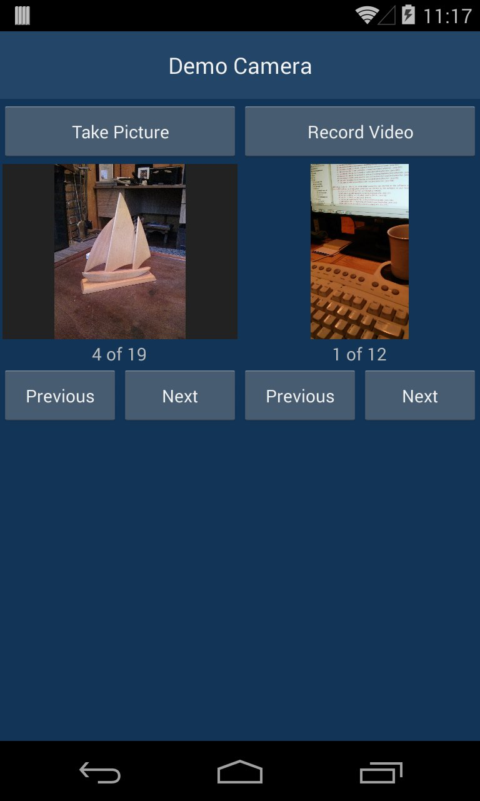
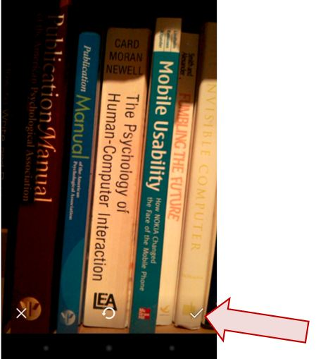
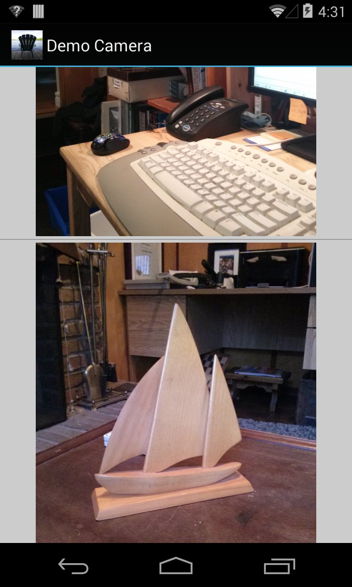
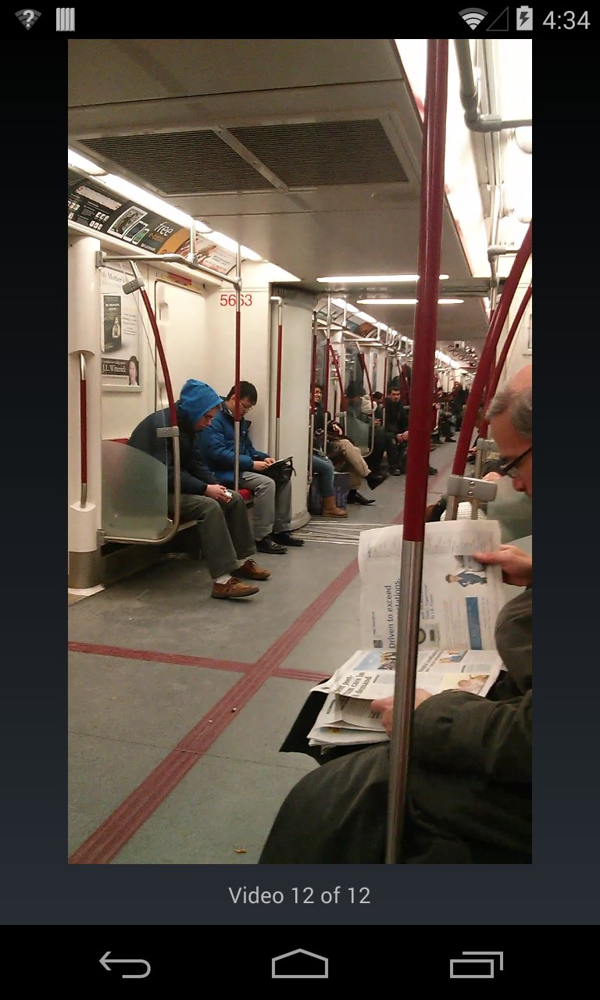
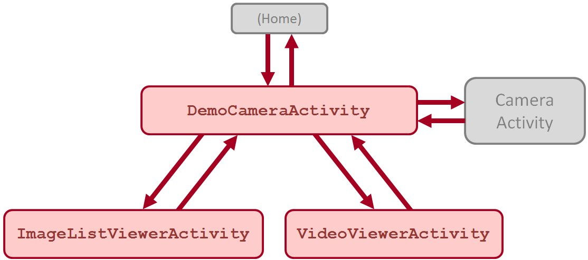

Demo_Camera - demo application that uses an Android device's built-in camera
Related information:
API Guides:
API References:
Although a camera application can be developed directly using the camera API, there is a simpler approach: using an
Intent. As noted in the API Guide,
A quick way to enable taking pictures or videos in your application without a lot of
extra code is to use an Intent to invoke an existing Android camera application. A camera intent makes a request to
capture a picture or video clip through an existing camera app and then returns control back to your application.
This is the approach demonstrated here.
Here is a screen snap of the demo application, showing a picture and video:

The picture (left) is displayed in an
ImageView, a subclass of
View. The video (right) is
displayed in a
VideoView, as subclass of
SurfaceView which is a subclass of
View.
To take a picture, the user taps the "Take Picture" button (see above). To record a video, the user taps the "Record
Video" button (see above). In either case, the device's built-in camera application is launched via an intent. This
occurs through code in the
onClick method which executes in response to the button tap. Here's the code
for launching the camera intent to take a picture (with comments):
// create Intent to take a picture and return control to the calling application
Intent intent = new Intent(MediaStore.ACTION_IMAGE_CAPTURE);
// specify a file URI where the image will be saved
fileUri = getOutputMediaFileUri(mediaStorageDirectory, MEDIA_TYPE_IMAGE);
// use putExtra to give the file URI to the intent
intent.putExtra(MediaStore.EXTRA_OUTPUT, fileUri);
// start the image capture Intent (when the intent finishes, onActivityResult will execute)
// Note: the 2nd argument is the Request Code (will be returned to onActivityResult)
startActivityForResult(intent, IMAGE_MODE);
This code closely follows the example in the the API Guide for Camera (link above). Please review this and the code
herein for further details.
When the camera application launches, the user interface is defined by the device's camera application, not the demo
application. After taking a picture or recording a video, the user is prompted with some options (depending on the
application). In order to retrieve the image in the demo application, it must be "saved" via the camera application.
The following screen snap shows the camera application just after taking a picture. The Save button (see arrow) must
be tapped to save the picture and return control to the demo application.

Taking this option saves the picture/video and returns control to the activity that launched the intent
(
DemoCameraActivity). At this juncture, the
onActivityResult method in the calling activity
executes. This method is defined in the
Activity class. Here's the signature:
protected void onActivityResult(int requestCode, int resultCode, Intent data)
The API for this method states,
Called when an activity you launched exits, giving you the requestCode you started it
with, the resultCode it returned, and any additional data from it.
The implementation of this method begins as follows:
@Override
protected void onActivityResult(int requestCode, int resultCode, Intent data)
{
super.onActivityResult(requestCode, resultCode, data);
if (requestCode == IMAGE_MODE)
{
if (resultCode == Activity.RESULT_OK)
{
// popup a message to the user
Toast.makeText(this, "Image saved to:\n" + fileUri.toString(), Toast.LENGTH_LONG).show();
Pictures/videos are saved in a directory called "CameraStuff" (created by this application) within the directory
returned by
Environment.getExternalStoragePublicDirectory(Environment.DIRECTORY_PICTURES);
For a picture, the file is named
IMG_, followed by a unique date+time designation, followed by
.jpg. An example with full path is
/mnt/shell/emulated/0/Pictures/CameraStuff/IMG_20150225_045939.jpg
For a video, the filename begins with
VID_ and ends with
.mp4.
This demo application also keeps track of the files contained in the CameraStuff directory. Separate lists are
maintained for the pictures (filenames ending with
.jpg) and videos (filenames ending with
.mp4). For this, a custom class that implements
FilenameFilter is used. The user can cycle
forward/backward through the saved pictures/videos using the Previous/Next buttons (see above).
Tapping on the view of a picture starts a new activity that presents a scrollable list of all the images. The
activity is
ImageListViewerActivity, a subclass of
ListActivity. A
ListActivity displays a list of items bound by a data source. In this case, the items are images, with
each image presented in an
ImageView. The
ListActivity hosts a
ListView in
which the
ImageView instances reside. The data source is provided by a custom class called
ImageAdapter, a subclass of
BaseAdapter. The actual data items (images in bitmaps) are
loaded by
ImageDownloader a custom class that includes an inner class called
BitmapDownloaderTask, a subclass of
AsyncTask. Additional details were presented in an
earlier demo program, Demo_ListView_2.
AsyncTask is a helper class built around
Thread and
Handler. An
AsyncTask instance provides computations that run on a background thread and provide results to the main
UI thread. The main advantage in using
AsyncTask is that the details of
Thread and
Handler are hidden. As noted in the
AsyncTask API,
AsyncTask enables proper and easy use of the UI thread. This class allows [an app] to
perform background operations and publish results on the UI thread without having to manipulate threads and/or
handlers.
The following is a example of the scrollable list of images available through
ImageListViewerActivity:

From the main activity, tapping on the view of a video starts a new activity to allow video viewing in full-screen
mode. The activity is named
VideoViewerActivity. Here's an example screen snap after
VideoViewerActivity is launched:

Full-screen video viewing mode supports flick gestures (called "flings" in the Android documentation). These are
provided through a custom class,
MyGestureListener, which extends
GestureDetector
.SimpleOnGestureListener.
GestureDetector.SimpleOnGestureListener is a
convenience class (known in Java/Swing as an
adapter class). It provides empty implementations of all the listener methods. There are nine. It is
"convenient" to use this class since we only need to implement the methods of interest. An implementation of
onFling is provided to advance to the next video (flick to the left) or the previous video (flick to the
right). We saw an implementation for
onFling in an earlier demo program, Demo_Scale. Only a bare-bones
implementation is included here; there is room for improvement.
There is also an implementation of
onSingleTap. Tapping on a video replays it.
Empty implementations are included for
onDoubleTap and
onLongPress. Perhaps you can think
of a reasonable UI response for these gestures.
To recap, this demo application includes four activities. Three are defined in the Demo_Camera package:
DemoCameraActivity,
ImageListViewerActivity, and
VideoViewerActivity. The
fourth is the activity associated with the camera intent. Activities are launched via intents. The intent to launch
this demo's initial activity,
DemoCameraActivity, is specified through the
intent-filter
element in
AndroidManifest.xml. To launch a new activity from within an activity, an intent is defined
in code and passed to
startActivityForResult along with a request code. When the launched activity
finishes, it executes
setResult and passes control back to the calling activity. In the calling
activity,
onActivityResult executes where the original request code, the result code, and the intent are
available for inspection. Here's a state diagram showing the flow of execution of activities within this demo
application:

The description above is a light on details, since there is the separate issue of passing data between activities.
As always, consult the source code, the source-code comments, the API Guides, and API References for further details.
NOTE: Sometimes new photos or videos taken with this app do not appear when viewing in Android's Gallery or Photos
app. One fix for this (which worked on my device) is to delete the .thumbnails directory in the DCIM folder and
reboot the device. For further discussion on this and other approaches to this problem, see
http://android.stackexchange .com/questions/7088/not-all-images-showing-up-in-gallery
{kind=link}
{kind=link}
{kind=link}
{kind=link}
{kind=link}